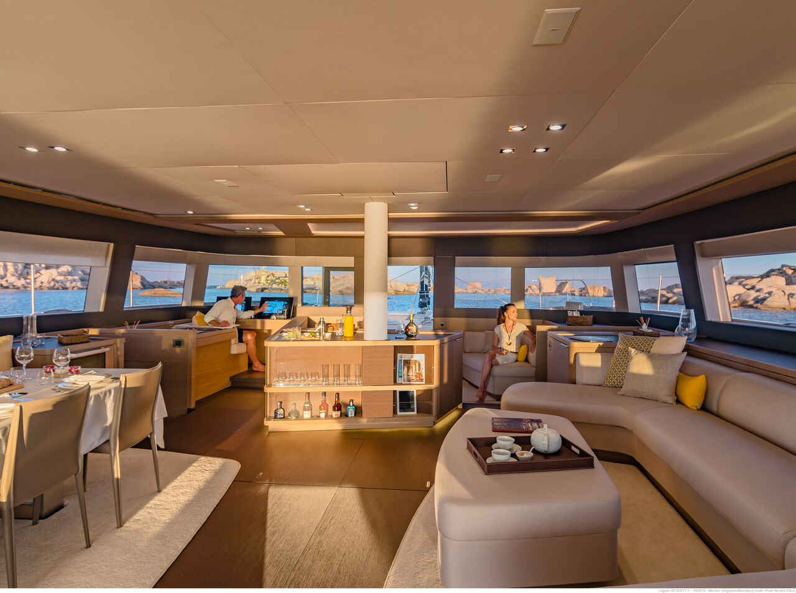
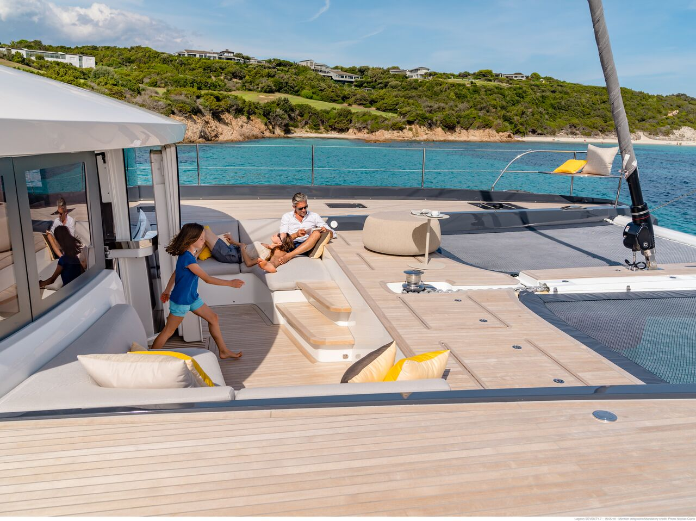
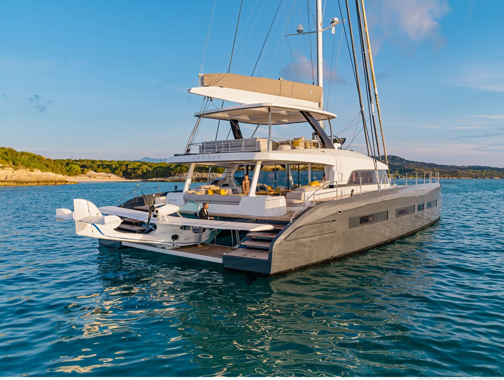

Large catamarans offer several advantages over monohulls—stability, space, and fuel efficiency. To make its new flagship Seventy 7 even more attractive, Lagoon has added a powerful sail. NauticExpo e-mag joined the crew for an afternoon outing on the South China Sea, where the first hull was launched.
Accommodations include up to 12 berths in three to five cabins. The owner’s suite has the much-talked-about "private beach", a large hydraulic door in the starboard topsides. There is a dedicated crew area, and the galley can be placed either forward or aft in the port hull. The former option offers a further 25 m2 of custom space for a meeting room, mahjong tables or perhaps karaoke.
The central saloon features companionways to the starboard owner’s suite, the aft guest suite, and the two portside cabins. Hull number one had the galley aft, adjoining the crew cabin. This allowed three double cabins to be dedicated to the owner and guests.
The Seventy 7 is a step up from the Lagoon 620. Its 56.8 tons are more than double the 27 tons of the 620. But is this simply a larger Lagoon or a significant innovation befitting a grand flagship?
Stylistically, it is a major change from Lagoon’s trademark blunt profile. Lines have been softened by regular design collaborators VPLP—the hulls are more curved and the deckhouse and enormous flybridge more rounded. Interiors have a distinctive superyacht feel thanks to Italian designers Nauta.
Taking the helm, we enjoyed a panoramic view from the flybridge thanks to the unobtrusive struts supporting the hardtop. We pushed the throttles down with confidence and headed out into South China Sea. Maintaining a safe distance, we joined the nearby procession of container ships and freighters steaming east. The 227 HP Nanni-John Deere engines driving V-shafts with three-bladed Brunton folding propellers gave us a top speed of 11 knots at 2600 rpm while burning a total of 100 liters of fuel per hour.
